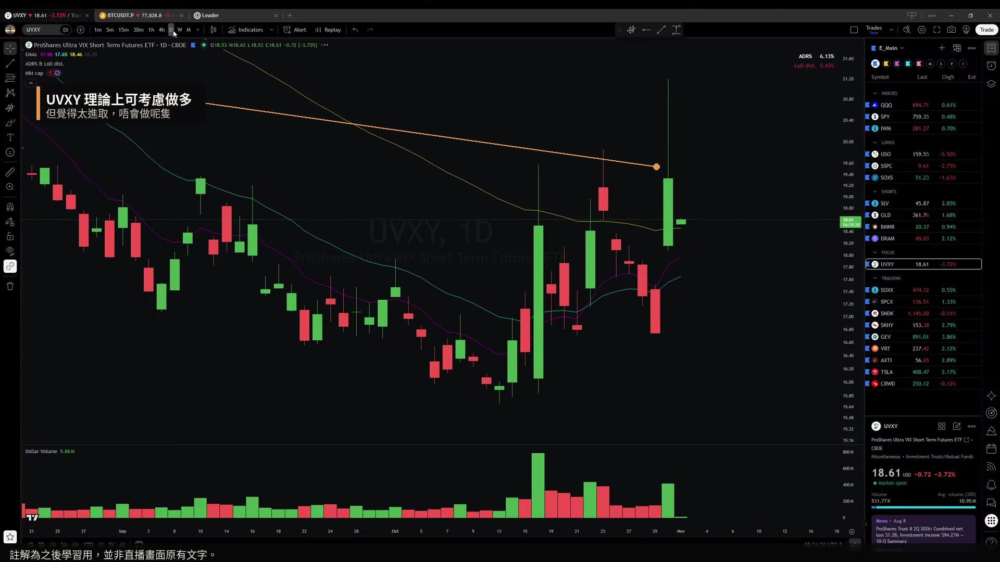

概要
位置同會唔會做，係兩件事
1:19:32 佢話 UVXY 理論上呢度或可做多，但呢個會太進取，所以大概唔會做呢隻。
圖一 · 主圖
UVXY：位置或可考慮，但太進取
直播 1:19:40

原話
I think UVXY could be a long here, but this will be a little bit too aggressive play. So probably, yeah, I'm not going to trade this one.
我覺得 UVXY 呢度或可做多，但呢個會有少少太進取。所以大概，係呀，我唔會做呢隻。
點樣讀
「可以係 long」同「我唔會做」一齊出現。呢頁只記錄呢個分別，唔把 UVXY 寫成推薦。
附註
注意事項
- 短短十數秒，冇講入場價或者倉位。
免責聲明：呢份係教育拆解，唔係投資建議，亦唔好當作買賣指示。